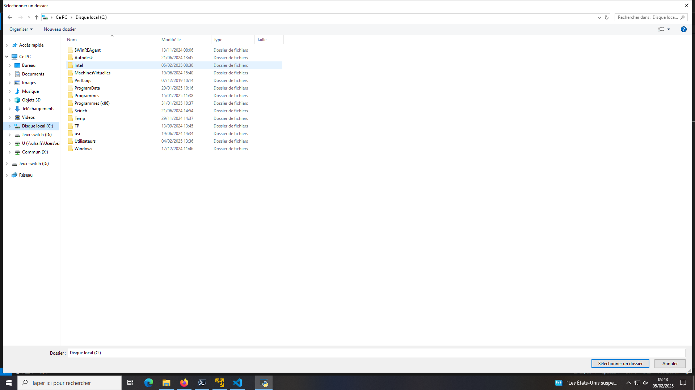
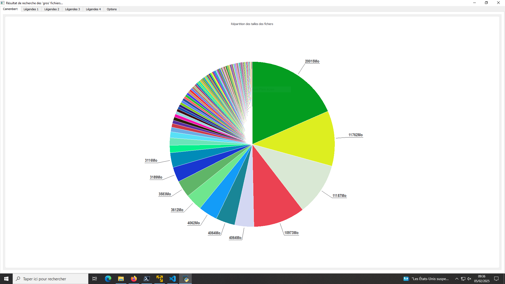
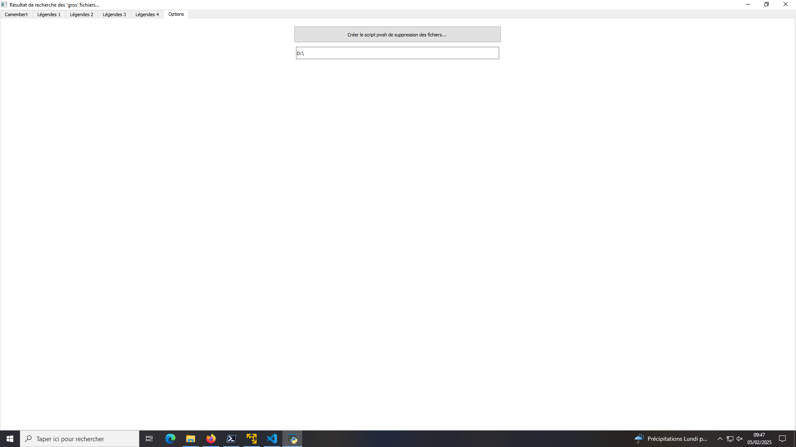

Le projet
Durant cette SAÉ, j'ai dû créer plusieurs programmes Python pour analyser un dossier ou un disque entier.
Voici un aperçu du résultat final :





Apprentissages critiques
- AC13.01 | Utiliser un système informatique et ses outils
- AC13.02 | Lire, exécuter, corriger et modifier un programme
- AC13.03 | Traduire un algorithme, dans un langage et pour un environnement donné
- AC13.04 | Connaître l'architecture et les technologies d'un site Web
- AC13.05 | Choisir les mécanismes de gestion de données adaptés au développement de l'outil et argumenter ses choix
- AC13.06 | S'intégrer dans un environnement propice au développement et au travail collaboratif